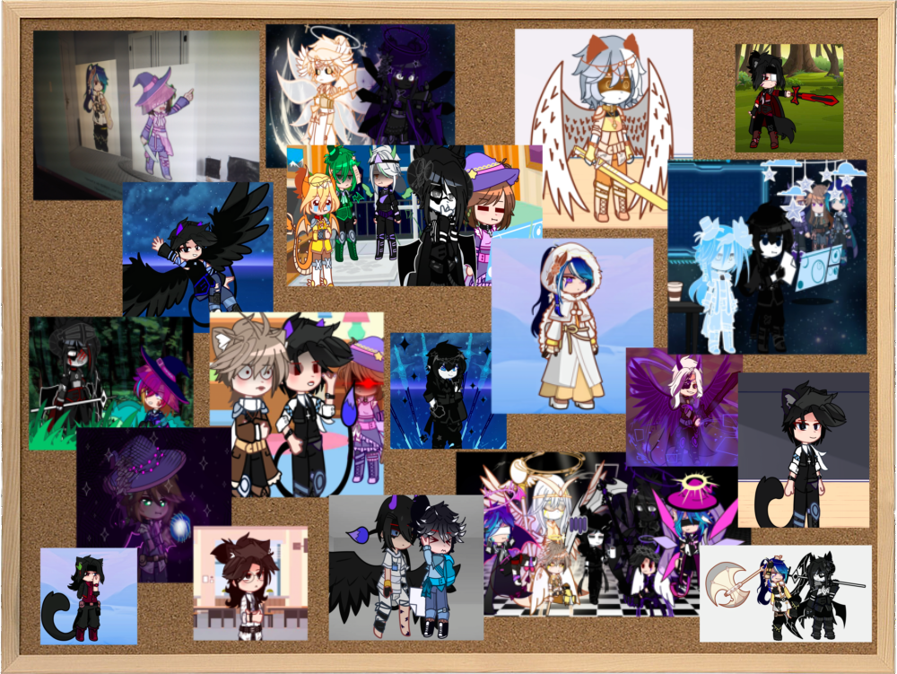

Добро пожаловать в нашу студию!
Это место, где живут наши персонажи, когда сюжет остановлен. Тут всегда происходит что-то интересное.
Не обращайте внимания на Кима, он обижен из-за горького чая.
И да, мы имеем кое-каких сказочных персонажей. Некоторые из них даже правители своих стран, а некоторые - злодеи.
Но не волнуйтесь, с ними можно общаться как с обычными людьми!
Это место, где живут наши персонажи, когда сюжет остановлен. Тут всегда происходит что-то интересное.
Не обращайте внимания на Кима, он обижен из-за горького чая.
И да, мы имеем кое-каких сказочных персонажей. Некоторые из них даже правители своих стран, а некоторые - злодеи.
Но не волнуйтесь, с ними можно общаться как с обычными людьми!
Нажмите на правую или левую стрелку для переключения комнаты.
Нажмите на персонажа, чтобы познакомиться с ним.

Нажмите на персонажа, чтобы познакомиться с ним.